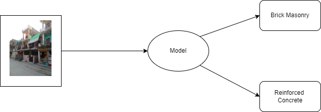
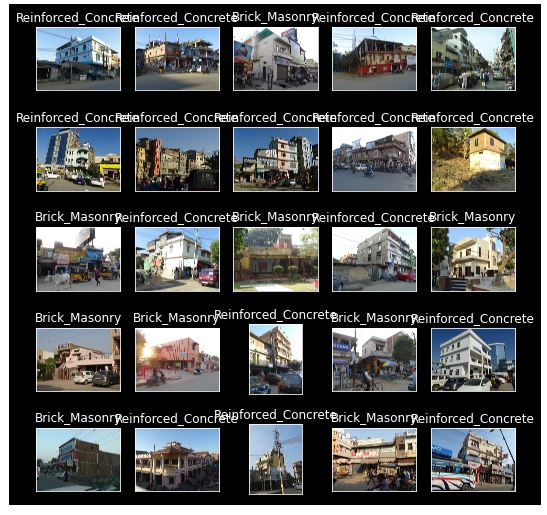
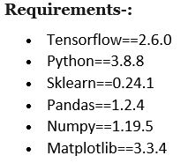
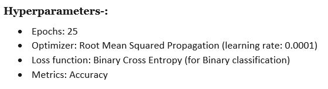
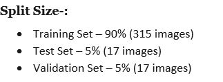

Getting Started
We are creating a binary Classification model that takes structure inside an image as its input and classifies if the structure in the image is either a Reinforce Concrete or Brick Masonry Building. At the moment the model is still in progress mainly becuase we are not reaching an accuracy we are satisified, this is mainly because to classify between two objects there needs to be visual paramters that can make a differentation and find a pattern between them, for training a Deep Learning network we also need huge amounts of image samples of both classes, and finally the data should have the right ROI of the object we are trying to classify. Most of these features have not satisified our needs to build a model with better accuracy.
To access either the model or the data for the EDRI application, you'll be needing private access, request for permission by writing a mail to siddharth.pilli@inai.iiit.ac.in or bhaskar.kuntimalla@ihub-data.iiit.ac.in
Problem Case - Statement
This application is going to be used by Civil Inspectors for travelling to the site to completely assess the risk of the structure to an Earthquake (pre or post). So if a Civil Inspector were to travel to a structure and start examining it, he first needs to understand if the structure is Reinforced Concrete or Brick Masonry. We are trying to build a feature where after capturing an image we can determine if the building is either Reinforced Concrete or Brick Masonry.
Exploring Data
This is a binary classification problem, so we have to claissfy if the strucutre either belongs to one of two classes, so in hand we have two datasets one for Reinforced Concrete and the other for Brick Masonry, let's explore these datasets.
Reinforced concrete, concrete in which steel is embedded in such a manner that the two materials act together in resisting forces. The reinforcing steel rods, bars, or mesh absorbs the tensile, shear, and sometimes the compressive stresses in a concrete structure. Plain concrete does not easily withstand tensile and shear stresses caused by wind, earthquakes, vibrations, and other forces and is therefore unsuitable in most structural applications. In reinforced concrete, the tensile strength of steel and the compressive strength of concrete work together to allow the member to sustain these stresses over considerable spans. Most of the apartments, houses, malls, and various structures tend to use Reinforced Concrete.
Brick masonry is a highly durable form of construction. It is built by placing bricks in mortar in a systematic manner to construct solid mass that withstand exerted loads. There are several types of bricks and number of mortars which can be used to construct brick masonry. The bond in brick masonry, which adheres bricks together, is produced by filling joints between bricks with suitable mortar. Special cautions shall be practiced while mortar is mixed and placed since it greatly affect the performance and durability of masonry structure. Most of the Brick Masonry structures can be found in villages but are a bit rare in cities.
Here are few images of both Reinforced Concrete and Brick Masonry:
Building the Model
We can now build the classification model, to build the model I have used an Inception V3. Below are the frameworks, hyperparameters, and split size used for building the model.
  
Training the Model
The model has been already trained, and the performance of the model doesn't make it ready for deployment. because with many data limitations we have undertstood that the model has been underfitted. So to solve for this problem we have tried with augmentations using KerasImageDataGenerator (seeing if it might help), but no luck. The concept of classifing building based on an image is a complicated task for humans itself. Because most of the building does not follow the right guidelines for building either Reinforced Concrete or Brick Masonry which makes it quite difficult to find a pattern for structures of Brick Masonry and Reinforced Concrete.
If you want to understand the model, or train the model yourself you can check out the notebook hereIssues
If you have any issue please raise a PR in github EDRI_APP